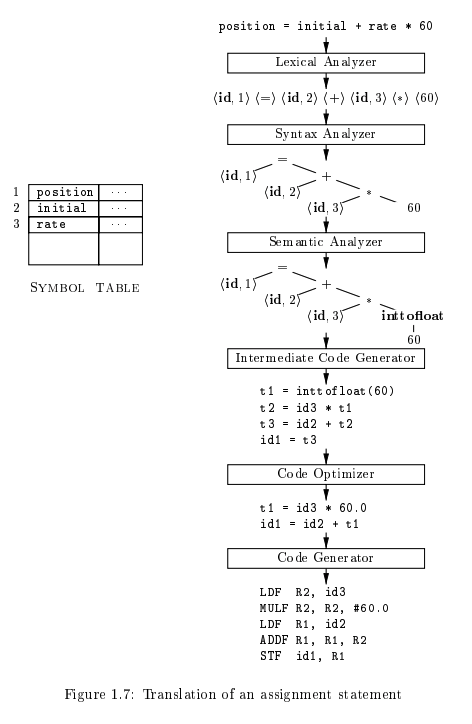
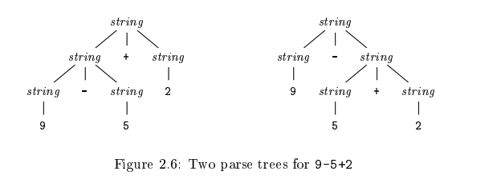
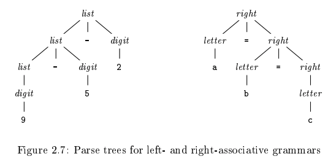
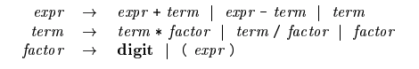

Compilers
Table of Contents
These are my notes on the book Compilers: Principles, Techniques, and Tools.
1 Basic Structure
A simple compiler goes through about seven stages, maintaining a symbol table to help with each step.

1.1 Lexical Analysis
After being handed modified code from the preprocessor, the compiler begins the lexical analysis stage in which it parses the code for tokens (or lexemes) of form <token-type, value>.
Example: position = initial + rate * 60
positionwould be mapped to something like<id, 1>as it is an identifier and would be placed first in the symbol table.- The = symbol would be mapped to its own token like
<=>or<assign>. Note that a) names for token types are arbitrary, and b) tokens need not have values. - Similarly to
position,initialwould be mapped to<id, 2>. - Like the assignment, + would be its own token like
<+>. ratemaps to<id, 3>.- * maps to
<*> - Finally, 60 would map to a token
<60>(more realistically<number, 4>as this number would also be stored in the symbol table).
1.2 Syntax Analysis
The list of tokens are then passed to the syntax analyzer which is responsible for generating an intermediate form organized around the language's grammar. This is done with a syntax tree, a tree where each node is an operator and its children are its arguments. This intermediate representation helps with later stages of the process.
Example: See chart at top for how the earlier example translates to a syntax tree.
1.3 Semantic Analysis
Semantic analysis uses the syntax tree generated by the syntax analyzer to check that the code follows the language's grammar.
The semantic analyzer also collects type information and stores it within the syntax tree or symbol table. Type checking is also done at this stage and the semantic analyzer ensures that the types of operator arguments match. Languages (like C) tend to support type coercions where certain types are converted to allow operations to work. Were the semantic analyzer to notice that position, initial, and rate are all floating points, it is responsible for adding an extra node for the inttofloat function for conversion of the integer 60.
1.4 Intermediate Code Generation
Most compilers generate abstract assembly-like code not specific to any architecture (but easily translatable to real assembly) to allow for high-level optimization in the next stage. This code is called three-address code, because it has at most three operands, and at most a single operator on the right side.
Example:
t1 = inttofloat(60) t2 = id3 * t1 t3 = id2 + t2 id1 = t3
1.5 Code Optimization
High-level optimization is performed on the three-address code.
Example:
inttofloatcan be run at compiled time and be replaced with its output, as 60 is an immediate value, not a variable.t2andt3calculations are not needed as they serves as intermediate calculations for the finalid1calculation.
t1 = id3 * 60.0 id1 = id2 + t1
1.6 Code Generation
Machine-specific assembly code is generated from the optimized intermediate code. Tasks like register allocation are most important in this step.
Example:
LDF R2, id3 MULF R2, R2, #60.0 LDF R1, id2 ADDF R1, R1, R2 STF id1, R1
1.7 Machine-Dependent Code Optimization
Machine-specific optimizations are performed upon the final assembly code. As the name implies, strategies for this vary quite a bit.
1.8 Symbol-Table Management
The symbol table is an important data-structure for recording the variable/function names used in the source code and their attributes. Said attributes can include name, type, scope, storage allocated for the variable, and for functions, the number of arguments and method of passing them.
2 Simple Compiler Frontend
2.1 Context-Free Grammar
Grammars describe the syntactical constructs we use in code.
Example: \(stmt \rightarrow \textbf{if (} expr \textbf{) } stmt \textbf{ else } stmt\)
This arrow (called a production) is a sort of definition, meaning that the statement can have that form. The keywords like if and else are called terminals, while expr and stmt are nonterminals.
Grammars must have:
- A set of terminals
- A set of nonterminals
- A set of productions for nonterminals
- A "start" nonterminal
Example:
A grammar for processing simple one-digit arithmetic (like 9-5+2) could be defined by the following productions (note that since digits must be separated by operators, it can be thought of a list of digits separated by operators):
\(list \rightarrow list \textbf{ + } digit \text{ | } list \textbf{ - } digit \text{ | } digit\)
\(digit \rightarrow 0 \text{ | } 1 \text{ | } 2 \text{ | } 3 \text{ | } 4 \text{ | } 5 \text{ | } 6 \text{ | } 7 \text{ | } 8 \text{ | } 9\)
The class of a string is determined by beginning with the start nonterminal and replacing each nonterminal with one of its productions.
Example:
The string 9-5+2 is a \(list\) because:
9is a \(list\) by production \(list \rightarrow digit\), as9is a \(digit\).9-5is a \(list\) by production \(list \rightarrow list \textbf{ - } digit\), as9is a \(list\) and5is a \(digit\).9-5+2is a \(list\) by production \(list \rightarrow list \textbf{ + } digit\) , as9-5is a \(list\) and2is a \(digit\).
Example: The grammar for a function call would look something like this:
\(call \rightarrow \textbf{id ( } params \textbf{ )}\)
\(params \rightarrow params \textbf{ , } param \text{ | } param\)
2.2 Parse Trees
Parsing is the step where the compiler attempts to derive what nonterminal the string is from the start symbol of the grammar.
Parse trees represent how this derivation takes place. In a parse tree,
- The root is the start symbol
- Interior nodes (those with children and parents) are nonterminals
- Leaves (nodes with no children) are terminals
- The children of an interior node must represent a production for that node.
The leaves of a parse tree, from left to right, are called its yield which is the string derived from the root of the parse tree.
2.2.1 Ambiguity
Note that grammars can have more than one possible parse tree for a string. These are called ambigous grammars.
Example: If the \(digits\) nonterminal was combined with \(list\) to create a more general \(string\), the grammar would be ambigous.

2.2.2 Operator Associativity
9+5+2 is the same as (9+5)+2 and 9+(5+2), and therefore a decision must be made on which operation the 5 is a part of. Operations that priortize the (9+5)+2 are called left-associative, whilst the opposite is known as right-associative. Most basic arithmetic operations are implemented as left-associative, but operators like exponentiation and assignment (in the case of C) are right-associative.
Example: A grammar for C assignment would be something like
\(right \rightarrow letter \textbf{ = } right \text{ | } letter\)
\(letter \rightarrow \textbf{a}\text{ | }\textbf{b}\text{ | }\ldots\text{ | }\textbf{z}\)

2.2.3 Operator Precedence
9+5*2 could be read as (9+5)*2 or 9+(5*2) and associativity does not resolve which one should be chose (as one is blatantly incorrect) so the concept of operator precedence is used instead, with operators of higher precedence like * claiming 5.
Example: A more complete set of productions can be used to represent our grammar for simple math now with the knowledge of operator precedence and associativity.

The production rules for \(expr\) ensure that \(term\) will have precedence.